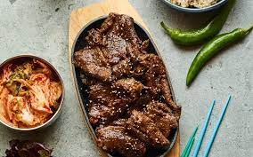

Bulgogi (Korean Beef Barbecue)

What is Bulgogi?
Bulgogi (Beef) is a popular Korean dish that typically consists of thin slices of beef marinated in a sweet and
savory sauce made with soy sauce, sesame oil, garlic, sugar, and other ingredients. The beef is then grilled or stir-fried until tender and caramelized,
and is often served with rice, lettuce leaves, and other side dishes. Bulgogi literally means "fire meat" in Korean, and the dish is known for its rich
flavor and tender texture. It is a beloved dish in Korean cuisine and has gained popularity around the world.
Ingredients
- 3 tablespoons coarsely chopped garlic, (about 2 cloves)
- 3 tablespoons soy sauce
- 2 tablespoons sugar
- 1 tablespoon honey
- 2 tablespoons freshly squeezed Asian pear juice
- 1 tablespoon rice wine, mirin, or dry white wine
- 1 tablespoon sesame oil
- 3 medium green onions, thinly sliced
- 1 teaspoon freshly ground black pepper
- 1 pound beef, thinly sliced
Steps
- In a small bowl, whisk together garlic, soy sauce, sugar, honey, pear juice, rice wine, sesame oil, green onions, and pepper until sugar and honey are dissolved.
- Mix the marinade into meat with your hands or with chopsticks, making sure all the meat is covered.
- Refrigerate the beef for at least 3 hours or overnight.
- Once the meat has been refrigerated for the appropriate amount of time, grill it, broil it, or stir-fry the beef until it is well-done and caramelized on the outside.
- Serve the beef with rice, additional chopped scallions, and side dishes such as kimchi.
Original Recipe